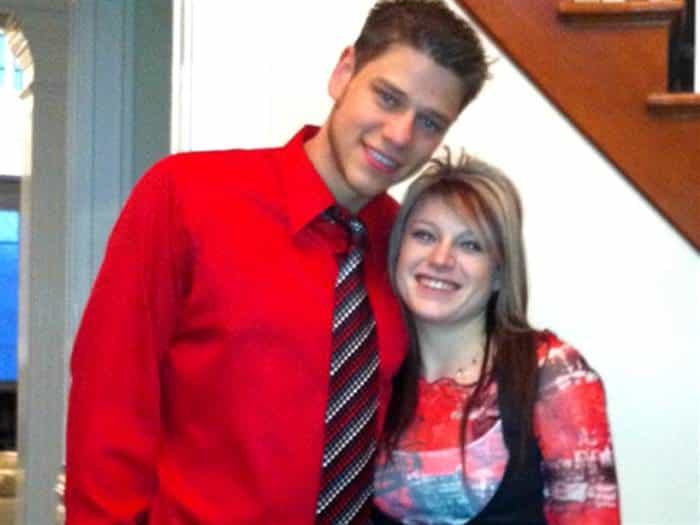

< < < Back
Angry Woman Shit Tests Boyfriend And Ends Up Getting Them Both Killed – Return Of Kings
Off the coast of Australia in May 2013, Paul Rossington and Kristen Schroder died. Their bodies have never been recovered. Both were passengers on the cruise liner Carnival Spirit, holidaying onboard with Schroder’s family.
After a verbal altercation visually recorded on the ship’s CCTV, both returned to their cabin. Some time later, infra-red footage showed Schroder climbing the balcony railing and then tumbling, seemingly accidentally, into the darkness of the sea, a near-fatal 18 metres below. Rossington jumped right in after her, perhaps unaware that his girlfriend had hit the ship on her way down and would probably have been killed even with a “clean” jump.
Deputy State Coroner Hugh Dillon recently released his conclusions into the pair’s death. It seemed evident to Dillon that Kristen Schroder was making a “dramatic gesture to alarm and test” Paul Rossington. Documented and anecdotal evidence proves that the relationship between the two could be tempestuous at best, the cruise being one last-ditch attempt to reorient the highly emotional crossroads they were facing.
Although it takes two to tango almost all of the time, Schroder appears, based on what we know, to be the one overwhelmingly at fault. Her lashings out at Rossington were discussed at the coroner’s inquiry, the result of her sessions with a psychologist. At one stage she went so far as to threaten suicide if Paul left her.
The coroner appears to have sugarcoated Kristen Schroder’s shit test of Paul Rossington
Imagine the responses of a girlfriend or others if a boyfriend made the sort of “dramatic gesture” that Kristen Schroder did.
Paradoxically, what they [Rossington and Schroder] had struggled to achieve in life – loving unity – they perhaps managed in their last actions alive.
– The blatantly over-the-top sentiments of Deputy State Coroner Hugh Dillon
I feel sorry for both the families and the victims. Not only did Rossington meet a truly terrible fate, neither did Schroder “deserve” to die. Schadenfreude towards the girlfriend is by no means the best or even a reasonable response in these circumstances.
Nonetheless, Deputy State Coroner Hugh Dillon, in my opinion, has erred in his findings. I have no reason to believe that they don’t accord with laws of inquiry as they stand, or the professional expectations laid down in his line of work. But following the rulebook can still deny the answers and frankness needed to stop similar accidents and tragedies.
Coroner reports are not entirely analogous to judicial rulings in courtrooms. There are some fundamental dissimilarities, and the former category can be both more and less speculative, depending on the individual types of information being considered at different times. Yet Dillon’s rather soppy approach to many elements of this inquiry has completely sugarcoated the flagrant melodrama and narcissism of Schroder in climbing the railing.
Considering that people generally don’t climb railings in such a way on the fifth-floors of buildings on land when there’s minimal wind, the girlfriend’s actions were beyond moronic, both for her own personal safety and the fear it would have generated in Rossington before she fell.
Would most girlfriends jump for their boyfriends?

Why don’t we see girlfriends and wives trying to save their male partners with the same fervor that Jon Blunk tried to – and did – save Jansen Young during the Aurora shootings?
In the context of this article, this is a somewhat tangential but nevertheless very potent point. I, probably like you, have no way of ascertaining what percentage of boyfriends and husbands, or simply men, jump in after women faced with certain or probable death, barring outside, frequently futile intervention.
Or die shielding their female partners to protect them from bullets and other violent attacks, as happened with several slain men during the Aurora shootings at a screening of The Dark Knight Rises. Maybe only half or a third of men do this. But I can promise you one thing: it’s more than the number of women who do it for men.
Just as Paul Rossington would have been widely deplored for shit testing his girlfriend in the way Kristen Schroder shit tested him, it is highly unlikely that Schroder would have jumped in after him were the roles reversed.
Significantly, Paul Rossington was a paramedic. He would have realized, however emotional he was at the time, the massive chance that Schroder died instantly upon hitting either the ship or the water. Combine that with the high seas of the Pacific and you have a recipe for an early, watery grave for a hero like him.
Men shouldn’t have to die trying to save unstable women
Men rescuing women is considered both necessary and paternalistic. What gives?
Deputy State Coroner Dillon rightfully called for Paul Rossington to receive a posthumous award for bravery. Like Jon Blunk, who died saving his partner Jansen Young, he should be celebrated as a hero.
Unlike Blunk and others at Aurora, however, Rossington died trying to rescue Schroder because of her own actions. Depression, anxiety and other forms of mental illness can explain a consistent emotional disposition, but they shouldn’t be automatically conjured up to excuse actions that resulted in her own death and, particularly tragically, Paul Rossington’s.
Respecting the memory of the dead doesn’t mean we have to (or should) ignore our obligations to the living, who are at greater risk of harm when society doesn’t adequately explain untimely deaths in the past. A forthright, non-romantic explanation of how Paul Rossington and Kristen Schroder died requires us to dispense with fairytale renderings of true love and the conquering of obstacles.
No obstacles were conquered here and the only true love proved, albeit naively in the eyes of some, was Paul Rossington’s.
Read More: The 4 Important Shit Tests Rocky Balboa Passed To Win Adrian